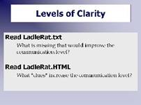

The Story of Ladle Rat Rotten Hut
So how cool is HTML? You tell me.
Here's an activity that will give you first-hand experience on what has happened to the world of text since the Web was introduced. As you do this, keep in mind that this is a global phenomenon.

[D]We will be reading one of my favorite fables, the story of Ladle Rat Rotten Hut.First, look at the plain text versionhttp://webexplorations.com/book/webDev/ladleRat.txt
Not much information, is there? Just text. No clues to what is going on. Sure, you could spend a few hours figuring out the story, but that's not communication, is it?
OK, now let's try the HTML version: http://webexplorations.com/book/webDev/ladleRat.html
Notice all the clues: there's a graphic, the hyperlinks on the left relate in some way to the story, and now you can at least see where the paragraphs are. Notice how useful the hyperlinks are in the story, giving you, the reader, clues and more information whenever you want it.
Compare the difference between the plain text and the HTML page. Even though you still don't understand the story, notice how much "nicer" the HTML page is with its graphics, layout, and multiple clues. It all comes down to which is the better communication tool. A blop of text or a nicely designed page built with HTML?
This text is obscure on purpose. I wanted you to focus on the mechanism not the story. Here are some tips to help you read and understand the story:
- Try reading it out loud.
- Each word is an actual word (from an English dictionary), but has been substituted for the "correct" words based on sound.
- Instead of visual words think of them as audio words.
For example: gull = girl and sorghum stenches = circumstances.
Note: Keep Ladle Rat Rotten Hut in mind the next time you write a paper in Word. Don't just dump a pile of text on your reader's lap. Use headings, graphics, and hyperlinks to make the paper more interesting and readable.